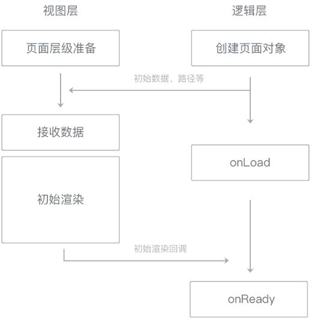

在小程序启动或一个新的页面被打开时，页面的初始数据（data）和路径等相关信息会从逻辑层发送给视图层，用于视图层的初始渲染。
Native层会将这些数据直接传递给视图层，同时向用户展示一个新的页面层级，视图层在这个页面层级上进行界面绘制。
视图层接收到相关数据后，根据页面路径来选择合适的WXML结构，WXML结构与初始数据相结合，得到页面的第一次渲染结果。

图7-4 初始数据通信时序图
分析这个流程不难得知：
页面初始化的时间大致由页面初始数据通信时间和初始渲染时间两部分构成。
其中，数据通信的时间指数据从逻辑层开始组织数据到视图层完全接收完毕的时间，数据量小于64KB时总时长可以控制在30ms内。
传输时间与数据量大体上呈现正相关关系，传输过大的数据将使这一时间显著增加。因而减少传输数据量是降低数据传输时间的有效方式。

图7-5 数据传输时间与数据量关系图